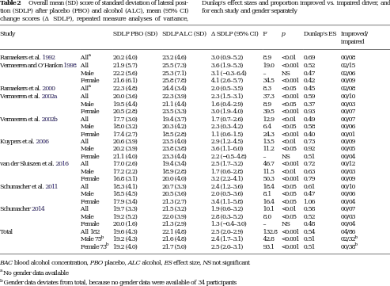

<?xml version="1.0" encoding="UTF-8"?>
<table title="table2" id="table2" class="tabcontent" xmlns="http://www.w3.org/1999/xhtml">
 <tr>
  <td>
   
   <p>corpus-oa-validation/10.1007_s00213-016-4519-z/tables/table2/table.svg.png</p>
  </td>
  <td>
   <table class="table">
    <caption/>
    <tr>
     <th/>
     <th class="cell">Study </th>
     <th class="cell">SDLP PBO (SD) </th>
     <th class="cell">SDLP ALC (SD) </th>
     <th class="cell">ΔSDLP (95% CI) </th>
     <th class="cell">F </th>
     <th class="cell">p </th>
     <th class="cell">Dunlap’s ES </th>
     <th class="cell">Improved/ impaired </th>
    </tr>
    <tr>
     <td class="cell">Ramaekers et al. 1992</td>
     <td class="cell">All^{a}</td>
     <td class="cell">20.2 (4.0)</td>
     <td class="cell">23.2 (4.6)</td>
     <td class="cell">3.0 (0.9–5.2)</td>
     <td class="cell">8.9</td>
     <td class="cell">&lt;0.01</td>
     <td class="cell">0.69</td>
     <td class="cell">00/08</td>
    </tr>
    <tr>
     <td class="cell">Vermeeren and O’Hanlon 1998</td>
     <td class="cell">All</td>
     <td class="cell">21.9 (5.7)</td>
     <td class="cell">25.5 (7.3)</td>
     <td class="cell">3.6 (1.9–5.3)</td>
     <td class="cell">19.0</td>
     <td class="cell">&lt;0.001</td>
     <td class="cell">0.52</td>
     <td class="cell">02/15</td>
    </tr>
    <tr>
     <td class="empty"/>
     <td class="cell">Male</td>
     <td class="cell">22.2 (5.6)</td>
     <td class="cell">25.3 (7.1)</td>
     <td class="cell">3.1 (−0.3–6.4)</td>
     <td class="cell">–</td>
     <td class="cell">NS</td>
     <td class="cell">0.47</td>
     <td class="cell">02/06</td>
    </tr>
    <tr>
     <td class="empty"/>
     <td class="cell">Female</td>
     <td class="cell">21.6 (6.1)</td>
     <td class="cell">25.8 (7.8)</td>
     <td class="cell">4.1 (2.6–5.7)</td>
     <td class="cell">34.5</td>
     <td class="cell">&lt;0.001</td>
     <td class="cell">0.42</td>
     <td class="cell">00/09</td>
    </tr>
    <tr>
     <td class="cell">Ramaekers et al. 2000</td>
     <td class="cell">All^{a}</td>
     <td class="cell">22.3 (4.8)</td>
     <td class="cell">24.4 (3.4)</td>
     <td class="cell">2.0 (0.5–3.5)</td>
     <td class="cell">8.3</td>
     <td class="cell">&lt;0.05</td>
     <td class="cell">0.45</td>
     <td class="cell">02/08</td>
    </tr>
    <tr>
     <td class="cell">Vermeeren et al. 2002a</td>
     <td class="cell">All</td>
     <td class="cell">20.0 (3.6)</td>
     <td class="cell">22.3 (3.9)</td>
     <td class="cell">2.3 (1.5–3.1)</td>
     <td class="cell">37.3</td>
     <td class="cell">&lt;0.001</td>
     <td class="cell">0.59</td>
     <td class="cell">00/10</td>
    </tr>
    <tr>
     <td class="empty"/>
     <td class="cell">Male</td>
     <td class="cell">19.5 (4.4)</td>
     <td class="cell">21.1 (4.4)</td>
     <td class="cell">1.6 (0.4–2.9)</td>
     <td class="cell">8.9</td>
     <td class="cell">&lt;0.05</td>
     <td class="cell">0.37</td>
     <td class="cell">00/03</td>
    </tr>
    <tr>
     <td class="empty"/>
     <td class="cell">Female</td>
     <td class="cell">20.5 (2.8)</td>
     <td class="cell">23.5 (3.3)</td>
     <td class="cell">3.0 (1.9–4.0)</td>
     <td class="cell">39.5</td>
     <td class="cell">&lt;0.001</td>
     <td class="cell">0.93</td>
     <td class="cell">00/07</td>
    </tr>
    <tr>
     <td class="cell">Vermeeren et al. 2002b</td>
     <td class="cell">All</td>
     <td class="cell">17.7 (3.0)</td>
     <td class="cell">19.4 (3.7)</td>
     <td class="cell">1.7 (0.7–2.6)</td>
     <td class="cell">12.9</td>
     <td class="cell">&lt;0.01</td>
     <td class="cell">0.49</td>
     <td class="cell">00/07</td>
    </tr>
    <tr>
     <td class="empty"/>
     <td class="cell">Male</td>
     <td class="cell">18.0 (3.2)</td>
     <td class="cell">20.3 (4.2)</td>
     <td class="cell">2.3 (0.3–4.2)</td>
     <td class="cell">6.4</td>
     <td class="cell">&lt;0.05</td>
     <td class="cell">0.58</td>
     <td class="cell">00/06</td>
    </tr>
    <tr>
     <td class="empty"/>
     <td class="cell">Female</td>
     <td class="cell">17.4 (2.7)</td>
     <td class="cell">18.5 (2.8)</td>
     <td class="cell">1.1 (0.6–1.5)</td>
     <td class="cell">24.3</td>
     <td class="cell">&lt;0.001</td>
     <td class="cell">0.40</td>
     <td class="cell">00/01</td>
    </tr>
    <tr>
     <td class="cell">Kuypers et al. 2006</td>
     <td class="cell">All</td>
     <td class="cell">20.6 (3.9)</td>
     <td class="cell">23.5 (4.0)</td>
     <td class="cell">2.9 (1.2–4.5)</td>
     <td class="cell">13.5</td>
     <td class="cell">&lt;0.01</td>
     <td class="cell">0.73</td>
     <td class="cell">00/09</td>
    </tr>
    <tr>
     <td class="empty"/>
     <td class="cell">Male</td>
     <td class="cell">20.2 (3.9)</td>
     <td class="cell">23.8 (3.8)</td>
     <td class="cell">3.6 (1.1–6.0)</td>
     <td class="cell">11.2</td>
     <td class="cell">&lt;0.05</td>
     <td class="cell">0.92</td>
     <td class="cell">00/05</td>
    </tr>
    <tr>
     <td class="empty"/>
     <td class="cell">Female</td>
     <td class="cell">21.1 (4.0)</td>
     <td class="cell">23.3 (4.4)</td>
     <td class="cell">2.2 (−0.5–4.8)</td>
     <td class="cell">–</td>
     <td class="cell">NS</td>
     <td class="cell">0.51</td>
     <td class="cell">00/04</td>
    </tr>
    <tr>
     <td class="cell">van der Sluiszen et al. 2016</td>
     <td class="cell">All</td>
     <td class="cell">17.0 (2.6)</td>
     <td class="cell">19.4 (3.4)</td>
     <td class="cell">2.5 (1.7–3.2)</td>
     <td class="cell">46.7</td>
     <td class="cell">&lt;0.001</td>
     <td class="cell">0.72</td>
     <td class="cell">00/12</td>
    </tr>
    <tr>
     <td class="empty"/>
     <td class="cell">Male</td>
     <td class="cell">17.2 (2.2)</td>
     <td class="cell">18.9 (2.8)</td>
     <td class="cell">1.7 (0.6–2.8)</td>
     <td class="cell">11.5</td>
     <td class="cell">&lt;0.01</td>
     <td class="cell">0.63</td>
     <td class="cell">00/03</td>
    </tr>
    <tr>
     <td class="empty"/>
     <td class="cell">Female</td>
     <td class="cell">16.8 (3.1)</td>
     <td class="cell">20.0 (4.0)</td>
     <td class="cell">3.2 (2.2–4.1)</td>
     <td class="cell">50.3</td>
     <td class="cell">&lt;0.001</td>
     <td class="cell">0.79</td>
     <td class="cell">00/09</td>
    </tr>
    <tr>
     <td class="cell">Schumacher et al. 2011</td>
     <td class="cell">All</td>
     <td class="cell">18.3 (4.1)</td>
     <td class="cell">20.7 (3.3)</td>
     <td class="cell">2.4 (1.2–3.6)</td>
     <td class="cell">18.4</td>
     <td class="cell">&lt;0.05</td>
     <td class="cell">0.61</td>
     <td class="cell">00/10</td>
    </tr>
    <tr>
     <td class="empty"/>
     <td class="cell">Male</td>
     <td class="cell">18.5 (4.5)</td>
     <td class="cell">20.5 (3.6)</td>
     <td class="cell">2.0 (0.5–3.6)</td>
     <td class="cell">8.1</td>
     <td class="cell">&lt;0.05</td>
     <td class="cell">0.47</td>
     <td class="cell">00/06</td>
    </tr>
    <tr>
     <td class="empty"/>
     <td class="cell">Female</td>
     <td class="cell">17.9 (3.4)</td>
     <td class="cell">21.3 (2.7)</td>
     <td class="cell">3.4 (1.1–5.8)</td>
     <td class="cell">16.4</td>
     <td class="cell">&lt;0.05</td>
     <td class="cell">1.06</td>
     <td class="cell">00/04</td>
    </tr>
    <tr>
     <td class="cell">Schumacher 2014</td>
     <td class="cell">All</td>
     <td class="cell">19.7 (3.3)</td>
     <td class="cell">21.5 (3.2)</td>
     <td class="cell">1.9 (0.6–3.2)</td>
     <td class="cell">10.1</td>
     <td class="cell">&lt;0.01</td>
     <td class="cell">0.58</td>
     <td class="cell">00/07</td>
    </tr>
    <tr>
     <td class="empty"/>
     <td class="cell">Male</td>
     <td class="cell">19.2 (5.2)</td>
     <td class="cell">22.0 (3.9)</td>
     <td class="cell">2.8 (0.3–5.2)</td>
     <td class="cell">8.0</td>
     <td class="cell">&lt;0.05</td>
     <td class="cell">0.52</td>
     <td class="cell">00/03</td>
    </tr>
    <tr>
     <td class="empty"/>
     <td class="cell">Female</td>
     <td class="cell">20.0 (1.6)</td>
     <td class="cell">21.3 (2.9)</td>
     <td class="cell">1.3 (−0.4–3.0)</td>
     <td class="cell">–</td>
     <td class="cell">NS</td>
     <td class="cell">0.48</td>
     <td class="cell">00/04</td>
    </tr>
    <tr>
     <td class="cell">Total</td>
     <td class="cell">All 182</td>
     <td class="cell">19.6 (4.3)</td>
     <td class="cell">22.1 (4.8)</td>
     <td class="cell">2.5 (2.0–2.9)</td>
     <td class="cell">132.8</td>
     <td class="cell">&lt;0.001</td>
     <td class="cell">0.54</td>
     <td class="cell">04/86</td>
    </tr>
    <tr>
     <td class="empty"/>
     <td class="cell">Male 75^{b}</td>
     <td class="cell">19.2 (4.3)</td>
     <td class="cell">21.6 (4.8)</td>
     <td class="cell">2.4 (1.7–3.1)</td>
     <td class="cell">42.8</td>
     <td class="cell">&lt;0.001</td>
     <td class="cell">0.51</td>
     <td class="cell">02/32^{b}</td>
    </tr>
    <tr>
     <td class="empty"/>
     <td class="cell">Female 73^{b}</td>
     <td class="cell">19.2 (4.0)</td>
     <td class="cell">21.7 (5.0)</td>
     <td class="cell">2.5 (2.0–3.1)</td>
     <td class="cell">93.1</td>
     <td class="cell">&lt;0.001</td>
     <td class="cell">0.51</td>
     <td class="cell">00/38^{b}</td>
    </tr>
   </table>
   <p>corpus-oa-validation/10.1007_s00213-016-4519-z/tables/table2/table.svg.html</p>
  </td>
 </tr>
</table>
